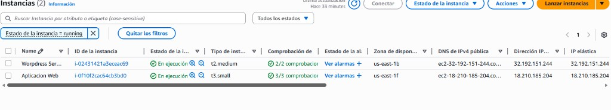
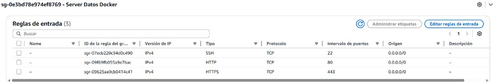
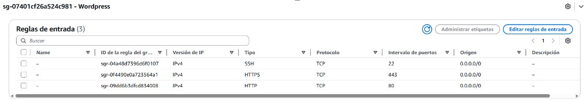
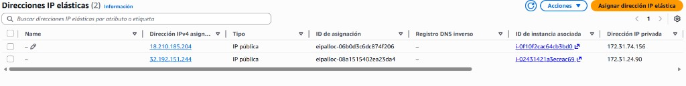
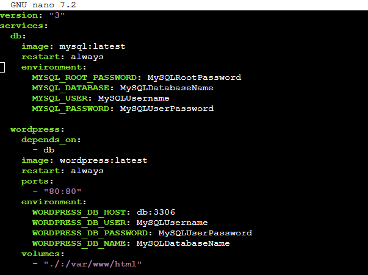
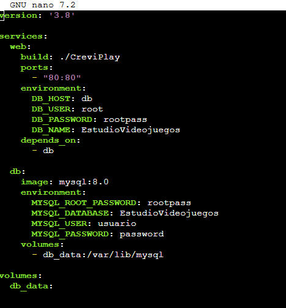
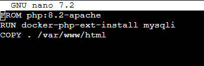

Desarrollo
En esta fase se ha llevado a cabo el despliegue de toda la infraestructura necesaria para el funcionamiento de la web corporativa de CreviPlay y del gestor de contenidos basado en WordPress, utilizando servicios de AWS y contenedores Docker para garantizar portabilidad, escalabilidad y facilidad de mantenimiento.
Infraestructura en AWS
Se han desplegado dos instancias EC2 independientes, ambas en la misma región y con sistema operativo Linux, cada una con un rol claramente diferenciado:

Instancia 1 – Servidor WordPress
La primera instancia está dedicada exclusivamente a alojar el servidor de WordPress:
- Tipo de instancia:
t2.medium. - Seguridad gestionada mediante un Security Group específico, con las siguientes reglas de entrada:
- SSH (TCP 22) abierto para administración remota.
- HTTP (TCP 80) para permitir el acceso web sin cifrar.
- HTTPS (TCP 443) para futuras conexiones seguras.
- Asociada a una Elastic IP, lo que permite disponer de una dirección pública fija para acceder al sitio WordPress desde cualquier lugar.
Instancia 2 – Aplicación web personalizada
La segunda instancia se encarga de ejecutar la aplicación web personalizada desarrollada a medida:
- Tipo de instancia:
t3.small. - Seguridad gestionada con otro Security Group independiente, también con acceso SSH (22), HTTP (80) y HTTPS (443).
- Asociada igualmente a una Elastic IP para facilitar el acceso a la aplicación web desarrollada a medida.
Esta separación de instancias permite aislar el CMS de la aplicación personalizada, mejorando la seguridad y facilitando el escalado o mantenimiento independiente de cada servicio.
En ambos casos se han definido Security Groups específicos donde se han habilitado de forma controlada los puertos necesarios para SSH y para el tráfico web.


Finalmente, se han asociado direcciones IP elásticas a cada instancia para garantizar direcciones públicas fijas.

Despliegue con Docker en el servidor de WordPress
En la instancia destinada a WordPress se ha utilizado Docker Compose para orquestar un entorno formado por tres contenedores principales que colaboran entre sí:

Contenedor de base de datos MySQL
El primer servicio es la base de datos MySQL, responsable de almacenar toda la información del sitio:
- Imagen utilizada:
mysql:latest. - Variables de entorno configuradas para definir el usuario administrador, la contraseña de MySQL y la base de datos específica para WordPress.
- Política de reinicio
alwayspara asegurar su disponibilidad continua.
Contenedor de WordPress
El segundo servicio es el propio WordPress, que se conecta a la base de datos anterior:
- Imagen utilizada:
wordpress:latest. - Dependencia explícita del contenedor de base de datos mediante
depends_on. - Puerto 80 del contenedor expuesto al exterior para servir el sitio web.
- Variables de entorno que conectan WordPress con MySQL (host, usuario, contraseña y nombre de la base de datos).
- Volumen asociado al directorio
/var/www/htmlpara persistir los datos del CMS.
Con este docker-compose.yml se consigue un entorno completo de WordPress, con base de datos y herramienta de administración, totalmente reproducible y fácil de levantar o detener con un único comando.
Despliegue con Docker en el servidor de la aplicación web
La segunda instancia EC2 aloja la aplicación web propia de CreviPlay, desarrollada en PHP y conectada a una base de datos MySQL. También se ha utilizado Docker Compose, en este caso con dos servicios principales claramente diferenciados:

Servicio web
El servicio web representa la aplicación PHP que se expone al usuario final:
- Se construye a partir de un Dockerfile personalizado.
- Expone el puerto 80 para servir la aplicación web.
- Utiliza variables de entorno para configurar la conexión a la base de datos (host, usuario, contraseña y nombre de la BD
EstudioVideojuegos). - Declara una dependencia del servicio de base de datos para asegurarse de que el contenedor de MySQL está disponible antes de iniciar Apache/PHP.
Servicio db (MySQL 8.0)
El servicio db es la base de datos de la aplicación:
- Utiliza la imagen
mysql:8.0. - Define mediante variables de entorno la contraseña del usuario root, el usuario de aplicación y su contraseña, así como el nombre de la base de datos principal.
- Asocia un volumen persistente (
db_data) a/var/lib/mysqlpara conservar la información aunque el contenedor se recree.
Dockerfile de la aplicación PHP
El Dockerfile utilizado para construir la imagen de la aplicación se basa en la imagen oficial php:8.2-apache e incluye los siguientes aspectos clave:

- Instalación de la extensión mysqli, necesaria para conectar con MySQL mediante
docker-php-ext-install mysqli. - Copia del código fuente de la aplicación al directorio
/var/www/html, que es el DocumentRoot de Apache dentro del contenedor.
Gracias a este enfoque, la aplicación queda empaquetada junto con todas sus dependencias, evitando problemas de configuración entre entornos y facilitando la replicación del servidor en el futuro.
Conclusiones de la fase de desarrollo e implantación
El uso combinado de AWS EC2, Elastic IPs, Security Groups y Docker/Docker Compose ha permitido desplegar una infraestructura modular y escalable, en la que:
- WordPress funciona como gestor de contenidos independiente para la parte más corporativa.
- La aplicación PHP personalizada gestiona la lógica específica del estudio de videojuegos.
- La separación en dos instancias reduce el impacto de posibles fallos y amplía las opciones de crecimiento del proyecto a medio y largo plazo.